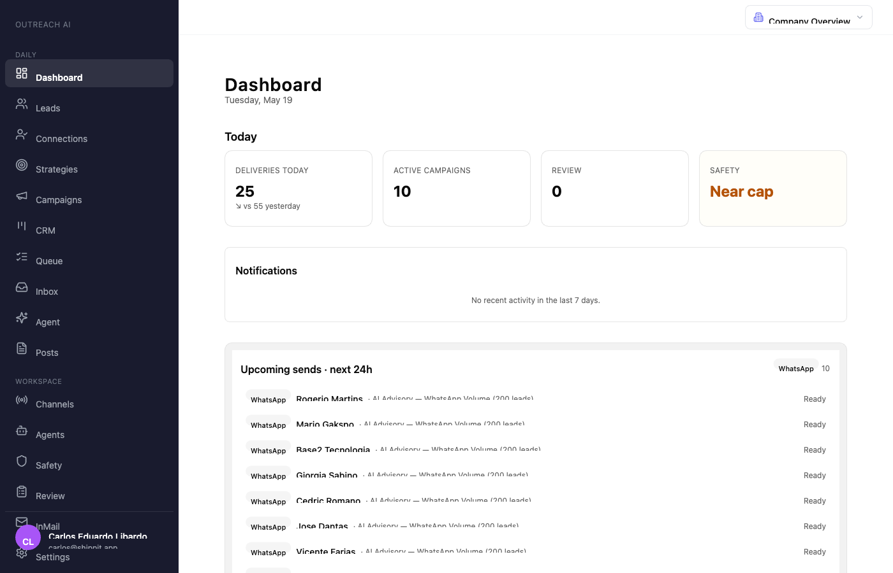

My phone shipped a smart contract while I was asleep..
Base mainnet. 04:17 BRT. Receipt on slide 9.
Stop typing fast.
Start orchestrating..
You're one prompt away from whatever you want to build.
Carlos Libardo · Shippit · 20 minutes · whatever CLI you brought.
Same feature. Three prompts..
Feature: reply-rate by hour of day on campaign analytics. Three worktrees, same model, same 25-min cap. Branches: bake/vibe, bake/plan, bake/sdd.
Vibe prompt
→ Prompt
add a chart showing reply
rate by hour of day to the
campaign analytics page→ What shipped
// sent bucket: send-hour
sentByHour[new Date(row
._creationTime).getHours()]++;
// replied bucket: REPLY-hour
repliedByHour[new Date(row
.lastReplyAt).getHours()]++;134 lines · 0 tests · 18 min
Tradeoff: fastest to something. Slowest to correct. Numerator and denominator measure different events — metric is meaningless. No test catches it. No reviewer catches it. Ship Monday, dies on Wednesday.
Plan prompt
→ Prompt
add reply-rate by hour-of-day.
plan first:
1. read analytics.ts patterns
2. add convex query
3. tz fallback: lead→acct→UTC
4. chart UI on analytics page
5. integration test→ What shipped
const tz = leadTz.get(key)
?? orgTz ?? "UTC";
const h = getHourInTz(
row._creationTime, tz);
sent[h]++;
if (REPLY_STATES.has(state))
replied[h]++;426 lines · 2 tests · 6 min
Tradeoff: right semantic, right TZ chain, atomic commits. But the plan is in your head, not on disk. Edge cases you didn't name (deleted leads, invalid IANA strings) silently fall back to UTC.
SDD framework
→ Prompt
/superpowers:brainstorm
"reply-rate by hour-of-day"
→ spec.md (14 FR, 12 AC)
→ plan.md (T1..T4)
→ failing tests RED first
→ implement → all GREEN→ What shipped
// spec.md, edge-cases §1:
// "Reply hour is the SEND
// hour, not the reply hour."
// US3.3: deleted-lead case
// → fall through to acct TZ
// US5.1: SP historical DST
// → Intl.DateTimeFormat779 lines · 10 tests · 8 min
Tradeoff: 6× the artifact, but spec caught the vibe bug in plain English before any code ran. AC IDs in every commit → next agent (or human, in 6 months) reads it like a contract. Heavy if you're throwing it away.
The surprise: SDD ran faster than vibe (8 min vs 18). Discipline isn't slower — vibe pays its tax mid-flight, in debug loops. When to use which: vibe for throwaway spikes. Plan when you'll keep it but only one of you owns it. SDD when a second human (or agent) ships against it.
Failing test first.
Always..
// step 1 — agent commits a failing test
test("rejects expired session cookie", async () => {
const res = await app.request("/api/me", {
headers: { cookie: `sid=${expiredSid}` },
});
expect(res.status).toBe(401);
});
// → FAIL: received 200
// step 2 — agent fixes implementation
- const session = await db.get("sessions", sid);
+ const session = await db.get("sessions", sid);
+ if (!session || session.expiresAt < Date.now()) return c.json({}, 401);
// step 3 — green. atomic commit.
$ git log -1 --oneline
3f9a1c2 fix(auth): reject expired session cookieRed proves the prompt was understood. Green proves it's done.
Skills are the new function calls..
---
name: brainstorming
description: Use this before any creative work —
creating features, building components, adding
functionality. Explores intent and design before
implementation.
---
# Brainstorming Ideas Into Designs
1. Explore project context
2. Ask clarifying questions, one at a time
3. Propose 2-3 approaches with trade-offs
4. Present design, get approval per section
5. Write spec → invoke writing-plansLazy-loaded catalog
Agent indexes descriptions. Pulls bodies only on match. 200+ workflows. Zero context bloat.
Source: superpowers:brainstorming — scoped this deck.
One conductor.
Many specialists..
Wall time of the slowest leaf. 4 minutes, not 16.
Subagents.
Or agent teams..
Subagents · Task tool
Main agent spawns N helpers. Each gets a prompt. Each runs in isolation. Each reports back. No cross-talk.
Best for: focused lookups, code search, structured reports. Lower token cost.
Agent Teams · Claude Code v2.1.32+
Independent Claude instances. Shared task list. Teammates message each other directly. Lead synthesizes.
Best for: parallel review, competing hypotheses, cross-layer refactors. Higher token cost.
# Subagents — main agent calls Task tool, gets summaries back.
# Agent Teams — flip the flag, then ask the lead to spawn a team.
$ export CLAUDE_CODE_EXPERIMENTAL_AGENT_TEAMS=1
$ claude
> Create a team of 3 reviewers for PR #142: security,
performance, test coverage. Have them debate findings.Subagents = MapReduce. Agent Teams = a small crew that argues. Same physics. Different tokens.
Four dials.
Or your $40 becomes $400..
Model split
Opus plans & reviews. Sonnet executes. ~5× cost gap, ~0× quality gap if the plan is good.
Worktrees
git worktree add per agent. Same repo, isolated checkouts. Three agents, zero merge conflicts on package.json.
Token compression
caveman hook drops articles + filler. rtk trims tool schemas. ~30–60% off long sessions.
Cost is a knob, not a verdict. Tune the split, isolate the checkouts, compress the chatter — same output, fraction of the spend.
Phone in pocket.
Agents in the cloud..
vlad provisions a GCP VM and turns it into a mobile-first Claude Code rig. mosh keeps the connection alive across wifi swaps. tmux pins every session. Tailscale hides the VM behind a mesh.
30-50ms latency. 100MB RAM per Claude instance. Survives airplane mode, subway tunnels, screen lock.
github.com/carloslibadoo/vlad
One cockpit.
Every session, in flight..
Live state
Cards per session. JSONL watcher tails ~/.claude/projects. Transcript, tmux mirror, git diff — all real-time over WebSocket.
Take control
Tap → terminal → toggle "Take control" → send-keys into tmux. Read-only by default. Deep-link tokens expire in 15 min.
One URL
Tailscale Funnel exposes 127.0.0.1:3000 as a single HTTPS endpoint. Phone, laptop, tablet — same cockpit.
SQLite state. HMAC-signed deep links. GitHub OAuth + login allow-list. M4 ships. v2 adds cron, webhooks, repo registry.
Cron and webhooks
turn it autonomous..
Label an issue bug. A session spawns. ntfy fires. I tap the deep link. Review or take over. The 04:17 webhook from slide 1 fired right here.
What the cockpit shows..

Sessions · live
12 live agents on opus-4-7. Each card: status, last activity, % context burned, $ spent. Click → terminal + diff.
Value: One screen, every agent across the fleet. No tab-juggling. Triage in 5 seconds, not 5 minutes.

Costs · last 7 days
$33,822 notional, broken down by repo / model / source / session / day. way2 $22k · playground $9k · ipe $45.
Value: Spend is now per-repo, per-model — kill the leaky session before it eats the budget.

Cron · scheduled sessions
5-field cron + repo + budget + prompt. Hourly · every 4h · daily 09:00 UTC · weekdays · weekly. Agents that run themselves.
Value: Recurring agent work without remembering to fire it. "Audit deps every Monday 7am" is one form.
The browser is the final gate..
$ bun test:e2e tests/grant-submission.spec.ts
✓ submits proposal and routes to /pending 1.8s
✓ judge agent scores within 90s 62.3s
✓ score persists to base-sepolia 9.1s
✓ score reads back from on-chain 3.4s
4 passed (76.6s)
# agent reads the green output, marks task complete,
# opens PR. no human in the verify loop.Type-checks lie. Unit tests lie. On-chain assertions don't.
Same product. Three frameworks.
Three deployments..
| Branch | Framework | Files | Live URL |
|---|---|---|---|
speckit |
GitHub Spec Kit | 258 | agent-reviewer-speckit.run.app |
full-vision-roadmap |
GSD | 1,103 | agent-reviewer-gsd.run.app |
superpower |
Superpowers | 992 | agent-reviewer-superpower.run.app |
AI Judge Agent for grant proposals. ERC-8004 identity. Base L2 + IPFS source of truth. Three live URLs; one canonical merged to main (ralph-unified).
Built. Audited.
Deployed..
Contracts — identical on sepolia
Solidity 0.8.24, Foundry. Audit toolkit ran inside the agent loop: solidity-security · gas-optimization · secrets-scanner · dependency-supply-chain.
An AI judge with on-chain receipts..

Home · three doors
Submit Proposal · View Proposals · Operator Dashboard. Same UI shape across all 3 framework branches — proves the spec held.
Value: The product is the spec. Same routes, same affordances, three independent implementations.

Evaluation · awaiting chain finality
Evaluation Submitted. AI judges scored 4 dimensions. Each card: Awaiting on-chain confirmation. Scores publish to EvaluationRegistry on Base; UI only shows them after the tx confirms.
Value: The canonical merge waits for chain finality. Bake-off branches cut that corner and look "faster" — but the audit trail lives here, not in their UI.

Operator dashboard · on-chain
System: Operational. Network: Base Sepolia. 6 contracts deployed · view on Basescan. Submit test proposal · health check.
Value: 6 Solidity contracts at known addresses — identical bytecode on mainnet and Sepolia via CREATE2. Click → Basescan → done.
One weekend.
V0 in production..
Stack — boring on purpose
Team LinkedIn outreach. Each teammate's account, their voice — agents research leads, write the message, time the follow-up.
Spec first. Failing test second. Agent third. Sleep fourth.
specs/Every teammate, their own agent..

Dashboard · daily ops
16 deliveries today. 9 active campaigns. Safety: Healthy. Next-24h queue: 10 WhatsApp sends ready, scheduled to lead-local working hours.
Value: One glance: is today on rails? Throughput, safety, what's about to fire — no spreadsheet, no dashboard hell.

Campaigns · 12 active
Active · paused · draft · completed. Each campaign = a strategy (ICP × agent × sequence × channel mix) replayed against a lead list. Filter by status, channel, owner.
Value: Run 12 outreach plays in parallel. Each one isolated, each one auditable, each one paused mid-flight without breaking the others.

Agents · voice + playbooks
Carlos — Founder Pitch. Gabriel — Shippit Discovery. Bruno — AI Consultancy CTO. Each teammate has a versioned agent: voice, facts, playbook.
Value: The agent doesn't replace the rep — it is the rep, in delegated form. Voice survives. Authenticity isn't lost in templating.
Four frameworks.
One physics..
| Framework | Philosophy | Killer move | Reach when |
|---|---|---|---|
| Superpowers | Brainstorm-first. TDD-disciplined. | Skill catalog + design gates | Process before code. |
| GSD | Milestone-driven. Phase-gated. | Wave-based parallel execution | Shipped artifacts on schedule. |
| OpenSpec | Spec-as-contract. | Diff on the spec, not the code | Multi-team, one source of truth. |
| Spec Kit | Specification-first. GitHub-native. | specify → plan → tasks → implement | Your repo is your PM. |
Skills are markdown. Specs are markdown. Plans are markdown. The CLI doesn't matter — the patterns travel.
Brand as code.
Design as a skill..
/gsp · get shit pretty
Brand contract in markdown: tokens, voice, banned words, layout grammar. Skills enforce it per-component. Same agent that ships code ships on-brand UI.
- Banned-words filter on every PR
- Token diff included in PR description
- This deck compiles from the contract
Claude DS · the reference
Anthropic's open design system for AI-native surfaces. Brand-neutral on purpose — primitives for chat, tool calls, citations. Fork, repaint, ship.
- Tailwind v4 tokens, dark-first
- Primitives built by the Claude Code team
- Bring-your-own brand layer (e.g. /gsp)
Specs ship code. The same loop ships design. Both treat identity as versioned tokens — one paints them, one prescribes them.
THINK · BUILD · CHECK · SHIP.
GitHub is the contract..
What the other SDD frameworks don't solve
- Team coordination. Most SDD assumes one dev. Simply Shippit treats milestone = feature, issue = AC, PR closes the loop.
- AC traceability. Every test, every review, every commit links back to the issue's acceptance criteria. No drift.
- The CHECK layer. "Tasks done" ≠ "goals met."
/shippit:checkruns verify-before-shipping with evidence. - Session rituals.
/shippit:gm&/shippit:gnsync state with GitHub each day, across the team.
Pipeline
/shippit:plan → scan · research · propose
/shippit:build → implement · test
/shippit:check → review · verify
/shippit:ship → verify · test · commit · pr
22 skills · 7 agents · GitHub-native state. Plugin for Claude Code. M1 dropping soon.
What broke.
What stuck..
Broke
- Vibes-first led to the agent deleting its own tests.
- Vague skill descriptions → never invoked.
- Parallel agents stomping shared files. Worktrees fixed it.
- On-chain test cost > CI budget until we mocked the RPC layer.
Stuck
- Atomic commits with the AC in the message.
- Specs in markdown, next to code.
- Verification skill gates every "done" claim.
- One conductor owns dispatch — never the model picking ad-hoc.
Skills are markdown.
Anyone can write one..
What is a skill
Frontmatter (name + description) is the index the agent memorizes — pennies of context. The body loads on demand, only when the trigger matches.
- Portable: Claude Code, Cursor, Codex, Gemini CLI
- 200 skills cost almost nothing until invoked
- Same shape as Cursor rules, Codex
AGENTS.md
How you write one
Invoke skill-creator. Describe the trigger in plain English. Paste reference docs. Agent scaffolds the folder, fills the frontmatter, writes the body.
- One prompt → committable skill in your repo
- Skill that writes skills — recursion is the point
- Anthropic's public catalog: github.com/anthropics/skills
Every link on the next slides is one prompt away from being a local skill in your repo.
Your agent stops
hallucinating ABIs..
| Resource | What it gives you |
|---|---|
ethskills.com |
24 markdown skills · corrects stale ETH training data |
OpenZeppelin/openzeppelin-skills |
Contract patterns from the OG · battle-tested |
OpenZeppelin/openzeppelin-mcp |
Natural language → contract scaffold via MCP |
coinbase/agentkit |
Agent → onchain actions · any framework |
bwb-tokenization/.claude/skills/* |
solidity-auditor · token-integration-analyzer |
| ↳ same shelf | dos-griefing · external-call-safety · signature-replay · input-arithmetic |
These are the skills we used to audit ipê-city. Real findings, MIT-licensable patterns. Drop the folder in, the agent reads the shelf, ABI hallucinations stop.
Same loop.
Different paint..
Orchestration alternative
mastra.ai — TS-first agent framework. Alternative to vlad-cockpit / Claude Agent SDK when the conductor lives in Node, not CLI.
- Agents, workflows, evals, memory — one stack
- Vercel/Next-native deploys
- Bring-your-own model · OpenAI, Anthropic, local
Design bridge
figma · dev-mode-mcp — Figma file → component code via MCP. Bridges /gsp brand contract to the designer-owned source of truth.
- Selection → code in the same editor session
- Variables, tokens, components — all readable
- Closes the designer ↔ code loop without re-typing
Orchestration is a slot. Design is a slot. Pick the dialect that matches your runtime — the loop underneath is the one we walked through tonight.
Steal everything.
Then ask AI for more..
| Framework / skill | Where to get it |
|---|---|
| Spec Kit | github.com/github/spec-kit |
| Superpowers | github.com/obra/superpowers · npx superpowers init |
| GSD | github.com/gsd-build/gsd-2 · npx gsd-pi |
| OpenSpec | github.com/Fission-AI/OpenSpec |
| /gsp — get shit pretty | npx get-shit-pretty |
| Simply Shippit | shippit.app · early access tonight |
This is a startkit.
Anything not on this slide — your agent can find a fitter alternative in one prompt. The shelf is infinite. Ask for the skill that matches your stack.
Open the laptop.
Ship tonight..
You're one prompt away from whatever you want to build. The tools exist. The patterns exist. The only variable left is whether you open the laptop tonight.
Ship the receipt,
not the demo..

Scan or visit
techlibs.github.io/
prompt-night
Carlos Libardo · Shippit
shippit.app · luma.com/eoums7t5
Questions in the open. Builder track at the back.